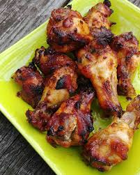

Teriyaki Recipe
Teriyaki Chicken Wings

Basic Description
These delicious teriyaki chicken wings are a hit at every party!
Prep Time:10 mins Cook Time:1 hr
Ingredients
- 1 cup of water
- 1 cup of white sugar
- 1 cup of soy sauce
- ¼ cup pineapple juice
- ¼ cup vegetable oil
- 1 tablespoon minced fresh garlic
- 1 tablespoon minced fresh ginger
- 3 pounds of chicken wings or drumettes
Directions
- Whisk water, soy sauce, sugar, pineapple juice, vegetable oil, garlic, and ginger,
together in a large glass or ceramic bowl until sugar has dissolved. Add chicken wings and toss to evenly coat. Cover the bowl with plastic wrap and marinate in
the refrigerator for at least 1 hour.
- Preheat the oven to 350 degrees F (175 degrees C). Grease baking dishes and set
them aside.
- Remove chicken wings from marinade; shake off excess and place the chicken
wings into the prepared baking dishes. Discard the remaining marinade.
- Bake chicken wings in the preheated oven until chicken is cooked through and
glaze is evenly browned, about 1 hour. An instant-read thermometer inserted
into the center should read at least 165 degrees F (74 degrees C).